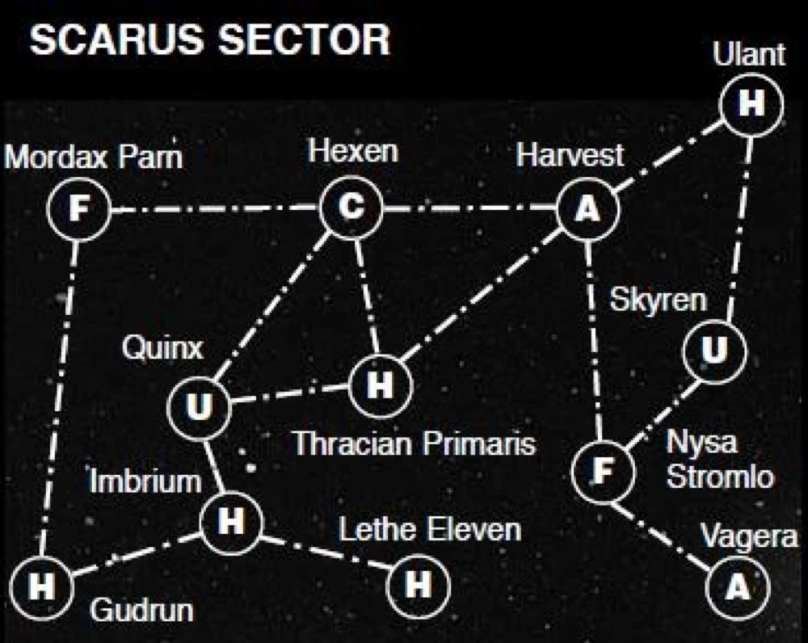

Scarus Sector
| Scarus Sector | |
|---|---|
 Chart of the Scarus Sector, with its principal worlds and warp routes Artwork © Games Workshop | |
| Segmentum | Segmentum Obscurus |
| Sector capital | Eustis Majorus |
| Sub-sectors | Helican, Angelus, Antimar, Kerak, Ophidian, Vincies (lost) |
| Notable worlds | Eustis Majorus, Thracian Primaris, Lethe Eleven, Mordax, Gudrun, Nysa Stromolo, Vraks |
| Governing body | A Sector Governor at Eustis Majorus, with the Battlefleet Scarus of the Imperial Navy |
| Status (as of M42) | Partly held by the Imperium; several worlds of the Imbrium and Ulant regions are under Ork control |
The Scarus Sector is an Imperial sector of the Segmentum Obscurus, close to the Eye of Terror and adjacent to the Calixis Sector to spinward. It takes its name from Captain Scarus, a Word Bearers officer of the Serrated Suns who was lost with his ship during a warp storm in the Pilgrimage of Lorgar. The sector has been the theatre of some of the Imperium's most notable Inquisitorial campaigns and of several long wars against the Orks.[1]
The sector's worlds are linked by a web of warp routes, and most are held by Imperial governors under the Administratum. Its capital is the Hive World of Eustis Majorus, and its sub-sectors are named for their principal worlds. The sector is important to the Imperium because it lies on the approach to the Calixis Sector and to the warp storms of the Eye.[1]
History
[edit]Great Crusade and Heresy
[edit]The region that became the Scarus Sector was discovered during the middle years of the Great Crusade, in the late 30th millennium. The Primarch Lorgar named it for Captain Scarus, whose strike cruiser Shield of Scarus and two other vessels were lost in a savage warp storm during the Pilgrimage of Lorgar, about forty standard years before the Horus Heresy.[1][a]
The Helican Schism
[edit]The Helican Sub-sector was the site of the Helican Schism, a wave of rebellion, terrorism and sabotage that swept the region in the early 41st millennium. Its causes were disputed at the time, and Imperial records of the period were later sealed by Inquisitorial edict.[1]
Siege of Vraks
[edit]The Scarus Sector was the scene of the protracted Siege of Vraks from 813.M41 until 830.M41, when Chaos forces laid siege to the Imperial world of Vraks. The siege drew in Inquisitorial agents, regiments of the Astra Militarum and a number of Chapters of the Adeptus Astartes, and it is still remembered among the sector's garrisons.[1]
Eisenhorn and Ravenor
[edit]The sector has long been the principal theatre of operations for the Inquisitors Gregor Eisenhorn and Gideon Ravenor. Their actions against the Chaos cults and xenos conspiracies of the sector are recorded in the sealed archives of the Ordo Xenos, and Eisenhorn's memoirs make the sector one of the best-known in Imperial literature.[2]
The Ork wars of the Era Indomitus
[edit]In the Era Indomitus, Ork WAAAGHs have overrun much of the sector's south and east. The Green Kroosade, which Imperial strategists regard as a full-scale WAAAGH!, has taken the weapon forges of Mordax and turned them to the building of Gargants, while Ork Mekaniaks race to complete their machines on the plains of Mordax daily. Chaos Space Marines of the Night Lords and the Black Legion are reported to have aided the Orks in their advance.[1]
Sub-sectors
[edit]The Helican Sub-sector is the sector's most disturbed region, and it holds the Imbrium, Quinx and Thracian Primaris systems. The Angelus Sub-sector is a frontier region along the Ulant approach. The Antimar, Kerak and Ophidian Sub-sectors form the sector's rimward ring of worlds. The Vincies Sub-sector is lost, and its worlds are no longer in contact with the Imperium.[1]
Notable worlds
[edit]Eustis Majorus is a Hive World and the sector capital. Thracian Primaris is one of the few worlds of the Helican Sub-sector that has held firm against the Orks, and Elnaur Delta has also held out. Lethe Eleven and Mordax are now Ork-held, and Mordax's weapon forges are reported to be building Gargants.[1]
Gudrun and Nysa Stromolo stand on the brink of anarchy. Vagera is a frontier world of the Ulant approach, and Ulant is a Hive World in the sector's north-east.[1]
Governance
[edit]The sector is governed by a Sector Governor from Eustis Majorus, who collects the tithe and answers to the Administratum. The Battlefleet Scarus of the Imperial Navy guards its warp routes, and it has frequently been stretched by the Ork campaigns.[3]
The Ordo Xenos and Ordo Hereticus keep their Inquisitors in the sector, and the Inquisition's campaigns there are often coordinated with those of the Calixian Conclave.[2]
Military
[edit]The sector's regiments are raised by the Departmento Munitorum and fight largely in the Ork wars. Their losses at Mordax and Gudrun are recorded in the Officio Militaris. The sector's Adeptus Astartes are drawn from a number of Chapters, several of whose homeworlds lie beyond the Imperium's borders.[4]
Timeline
[edit]| Date | Event |
|---|---|
| Late 30th millennium | The region is discovered during the Great Crusade[b] |
| c. 40 years before the Heresy | Captain Scarus is lost during the Pilgrimage of Lorgar; the region is named for him |
| Early 41st millennium | The Helican Schism spreads rebellion and sabotage through the Helican Sub-sector |
| 813.M41 | The Siege of Vraks begins |
| 830.M41 | The Siege of Vraks ends |
| Late M41 | Ork WAAAGHs advance into the south and east of the sector |
| Era Indomitus | The Green Kroosade takes the weapon forges of Mordax |
| M42 | Lethe Eleven and Mordax are recorded as Ork-held; Gudrun and Nysa Stromolo are on the brink of anarchy |
See also
[edit]
Notes
[edit]References
[edit]- ^ a b c d e f g h i Dembski-Bowden, Aaron. The First Heretic (novel). Black Library, Ch. 13. Abnett, Dan. Xenos (novel). Black Library.
- ^ a b Abnett, Dan. Malleus (novel). Black Library. Abnett, Dan. Hereticus (novel). Black Library.
- ^ Codex: Eye of Terror (3rd Edition), pp. 16, 24. Games Workshop. [http://app.fantasyflightgames.com/dark-heresy/calixis-scarus.shtml The Scarus Sector at Fantasy Flight Games].
- ^ The Inquisition (Background Book). Imperial Armour Volume Five - The Siege of Vraks - Part One.